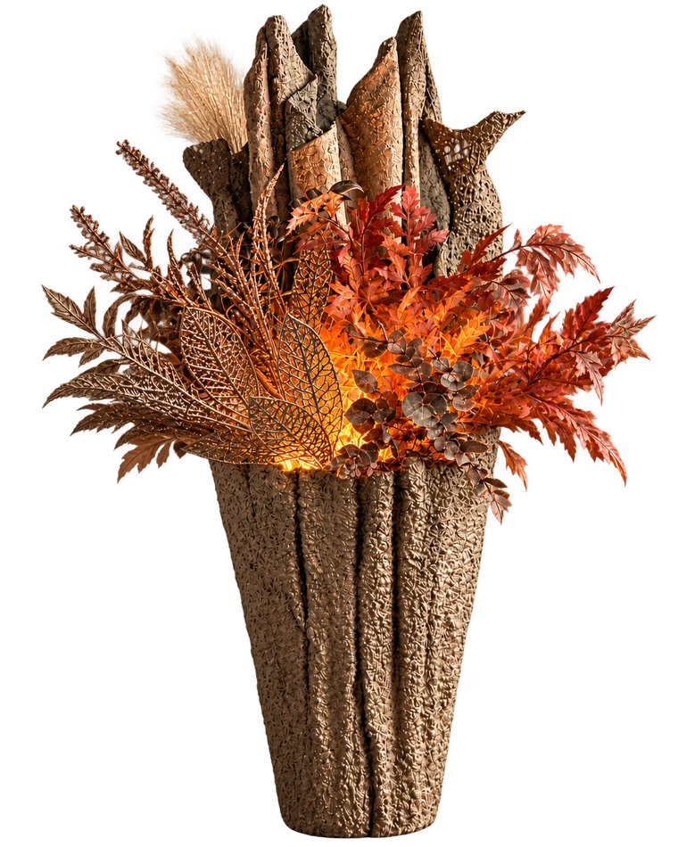
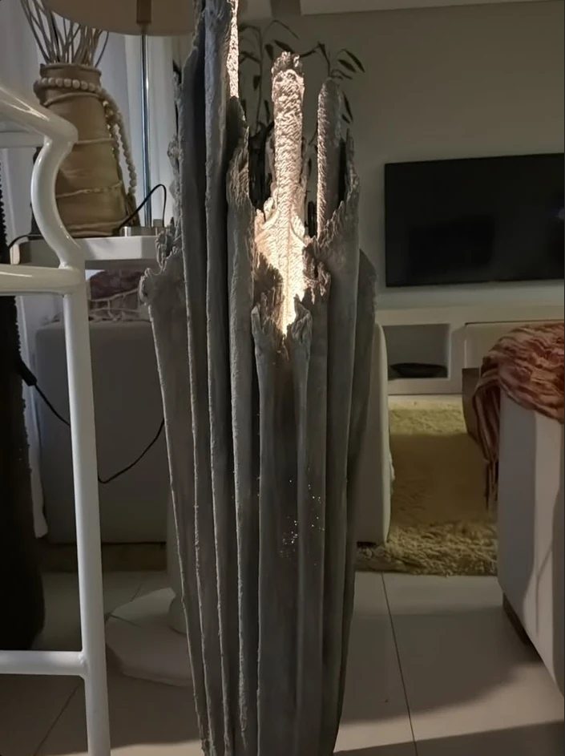
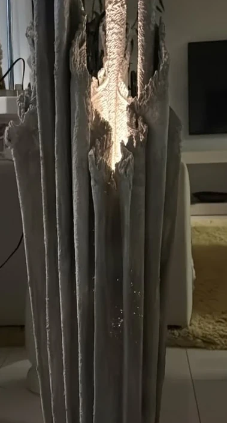
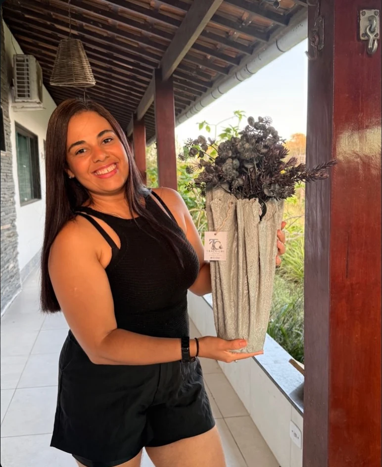
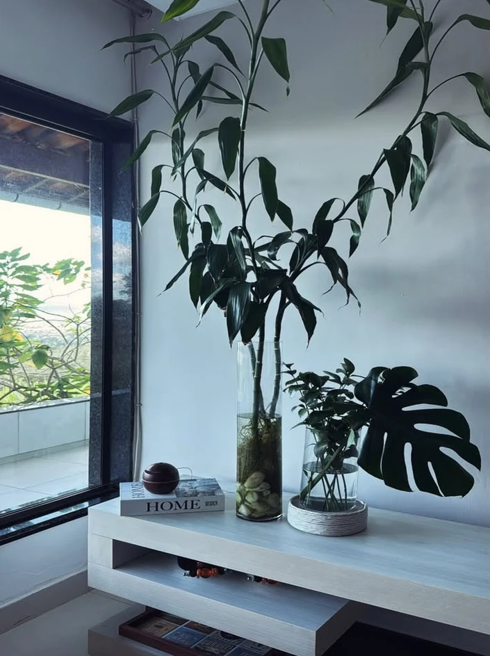

O cimento
também tem alma.
Formas orgânicas, texturas únicas e criações que carregam a beleza do gesto humano.
Descubra as criaçõesONDE A MATÉRIA ENCONTRA A SENSIBILIDADE
O que é bruto
também pode
ser delicado.
Entre superfícies irregulares, formas livres e marcas do fazer manual, nasce uma beleza que não precisa ser perfeita para ser extraordinária.
Sinta a matéria
Formas que
não se repetem.
Objetos que dialogam com a natureza, guardam texturas singulares e levam personalidade a cada espaço. Conheça os registros das criações e consulte a peça que despertou seu interesse.
Cada criação tem seu próprio caráter. Consulte o ateliê para saber detalhes, valores e disponibilidade.
CONSULTAR UMA PEÇAExiste beleza
no imperfeito.
Marcas, ranhuras, sombras e relevos revelam o caráter de cada superfície. Aproxime o olhar e encontre os detalhes.

DETALHE / 01 — RELEVO VERTICALExplorar
o relevo.
FOTOGRAFIA DE DETALHE / RELEVO VERTICAL
Observe o relevo desta peça. A imagem disponível é um recorte fotográfico; uma fotografia macro de alta resolução permitirá explorar ainda mais detalhes.

POR TRÁS DE CADA FORMAFeito por mãos.
Criado com alma.
Cada peça começa com a possibilidade de transformar uma matéria cotidiana em algo que desperte sentimento.
O trabalho manual dá lugar a texturas, variações e formas que carregam a presença de quem cria. Na Traço Cru, a beleza mora justamente nesses detalhes.
Arte em cimento feita à mão, com propósito e alma.Conheça o Instagram

INSPIRAÇÃO / AMBIENTESA natureza
por perto.
Luz natural, folhagens e superfícies minerais inspiram a maneira como imaginamos os espaços ao redor das peças.
REFERÊNCIAS DE ATMOSFERA, LUZ E MATÉRIA.Criar também
transforma.
Experimentar a matéria é descobrir possibilidades. Os cursos da Traço Cru convidam a conhecer o cimento por outro olhar: o da criação feita com as próprias mãos.
A experiência de criar com as próprias mãos.
Uma conversa pode
dar forma a algo único.
Gostou de alguma peça ou quer conhecer melhor o ateliê? Conte o que despertou sua curiosidade.